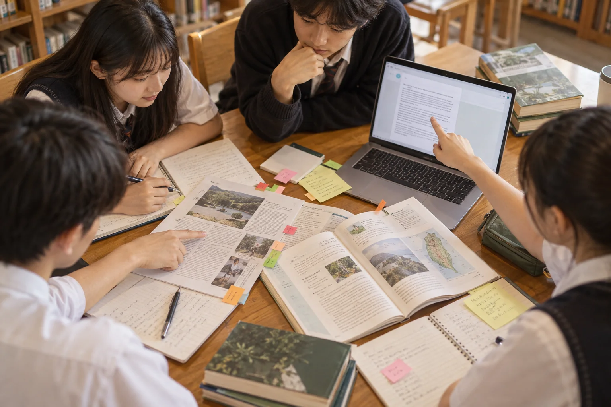

AI EDUCATION
AI 教育｜理解它
從資料、模型與機率出發，認識監督式學習、生成機制、偏誤與風險。
- 資料如何影響結果
- 模型為何會「合理地答錯」
- 人應承擔什麼責任
AI × PEDAGOGY × HUMAN JUDGEMENT
從「會使用」走向「會設計」——給教師的 12 個教學現場
37%
OECD TALIS 2024：已有 37% 的國中階段教師在工作中使用 AI。
生成式 AI 能改善作品品質、縮短備課時間；但若把思考外包，學生得到的可能只是漂亮答案。
教學設計的關鍵，不是「能不能用 AI」，而是它是否促使學生提問、查證、解釋、修正與反思。教師仍是目標、節奏與價值判斷的設計者。
若學生交出更完整的作品，卻無法說明其中的判斷，代表工具提升了表現，還沒有形成學習。請他用自己的話重述、舉例，再回到證據。
原簡報把 AI 教育分成「學原理」與「學應用」。兩者交會時，學生不只會操作，也能判斷工具何時適用、為何出錯。
AI EDUCATION
從資料、模型與機率出發，認識監督式學習、生成機制、偏誤與風險。
AI IN EDUCATION
把 ChatGPT、Gemini、NotebookLM 等工具放進明確的教學流程。
四個動詞，不是一條直線，而是一個反覆迭代的教學循環。
每一次產出，都回到學習目標：學生因此多做了什麼思考？
提示詞工程不是咒語。它把教師原本就在做的事——釐清對象、目標、限制與證據——說得更具體。
你是國中自然科的探究教練，面對八年級學生。
以雲林沿海環境為題，提出可在四週完成的專題方向。
使用校內可取得器材；每案須含資料來源與安全考量。
先給三案，逐案追問我需求；不要直接完成學生作品。
指出不確定處、可能偏誤，以及仍需查證的主張。
「幫我設計一個環境專題。」
「先問我三個問題釐清學生程度、可用器材與時間，再提出方案；每案列出需要查證的假設。」
把 AI 放在準備、鷹架與回饋的位置，把關係、觀察與關鍵判斷留給教師。
從課綱與教材產生多層次例題、常見迷思、生活化類比；教師篩選與修訂。
教師把關：目標對齊、難度、事實讓 AI 扮演辯論對手、歷史人物或診斷教練，一次問一題，先提示再解釋。
教師把關：互動節奏、情緒、參與依共同規準整理作品特徵，提出可行的下一步；不讓 AI 單獨決定分數。
教師把關：脈絡、公平、個別差異比較原稿、提示、AI 回應與定稿，讓學生說明自己保留、修改或拒絕了什麼。
教師把關：學習證據、後設認知先別急著看答案。你已經知道哪些條件？
我知道溫度變高，但不確定是不是造成植物變矮。
很好。要區分「同時發生」與「因果關係」，你會再收集哪一種證據？
先問、再提示、最後才解釋；每一步都要求學生說出理由。
用問題釐清已知、未知與證據。
同一概念可要求白話、類比，再逐步深入。
一次一題，答錯先給提示，最後整理迷思。
「不要直接告訴我答案。先了解我會到哪裡，再一次問一個問題；如果我卡住，先給方向提示，最後請我用自己的話總結。」
NotebookLM 類型的來源導向工具，適合把課文、講義、研究資料與學生作品放進同一個可追溯的學習空間。

當產出變得容易，評量應看見學生如何界定問題、選擇證據、修改 AI 建議，以及為作品辯護。
發想、語句潤飾、建立練習題；須保留使用紀錄。
架構與資料整理；須查證並標註工具、範圍與修改內容。
代寫核心論證、輸入個資、捏造引用，或在禁止使用的評量中求答。

資訊科技專題最適合把 AI 放回真實問題：學生觀察現場、蒐集資料、製作原型，再請 AI 協助整理與檢驗。
AI 生圖、資訊圖表與影音可以降低表達門檻；作品的觀點、取捨、敘事與責任，仍必須由學生承擔。
先寫分鏡與角色設定，再生成素材；比較版本、修正一致性。
資料先查證，圖像再服務訊息；避免「看起來有數據」卻沒有來源。
學生團隊規劃腳本、畫面與旁白，揭露 AI 素材並取得必要授權。

「智慧不是輸入提示，
而是持續的對話。」
先從低風險、可查證的小任務開始；和學生一起訂規則、看歷程、談選擇，再逐步擴大使用。